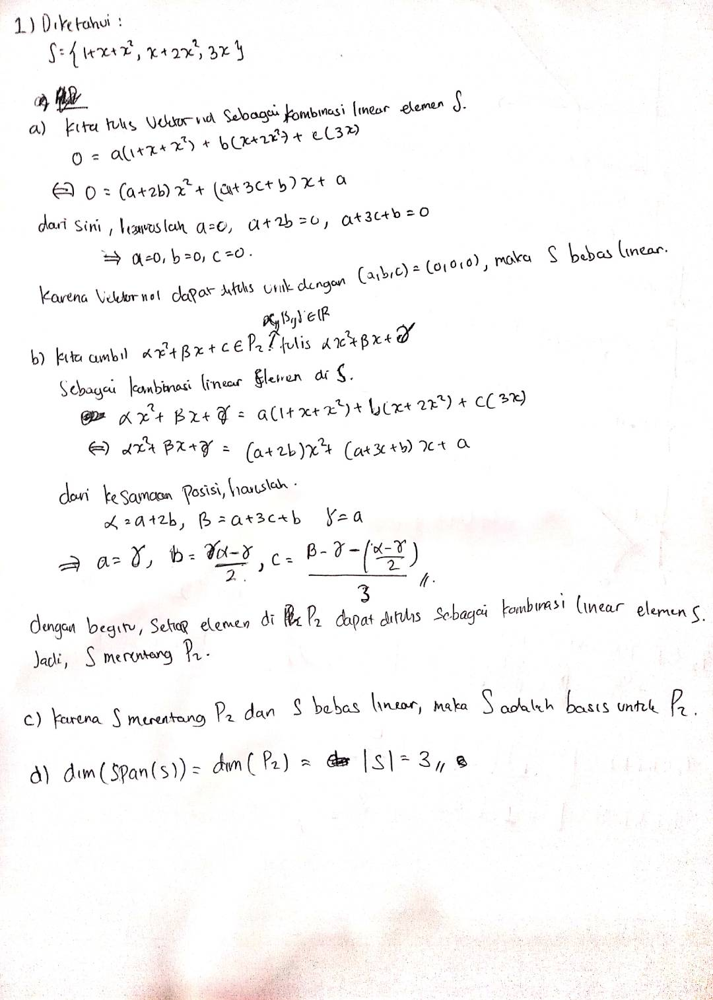
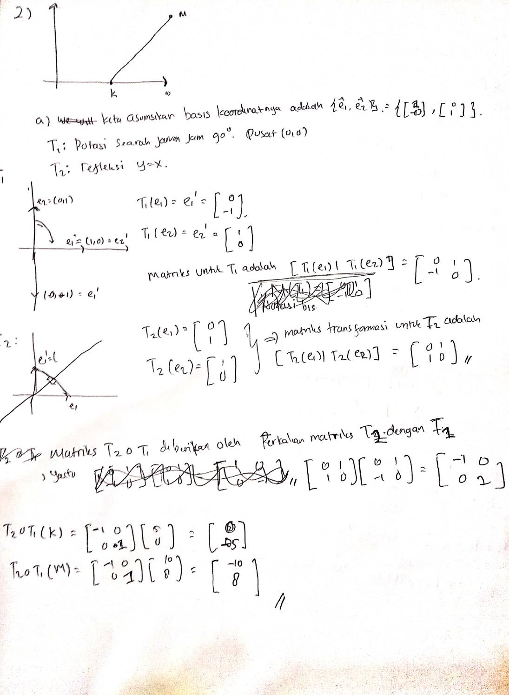
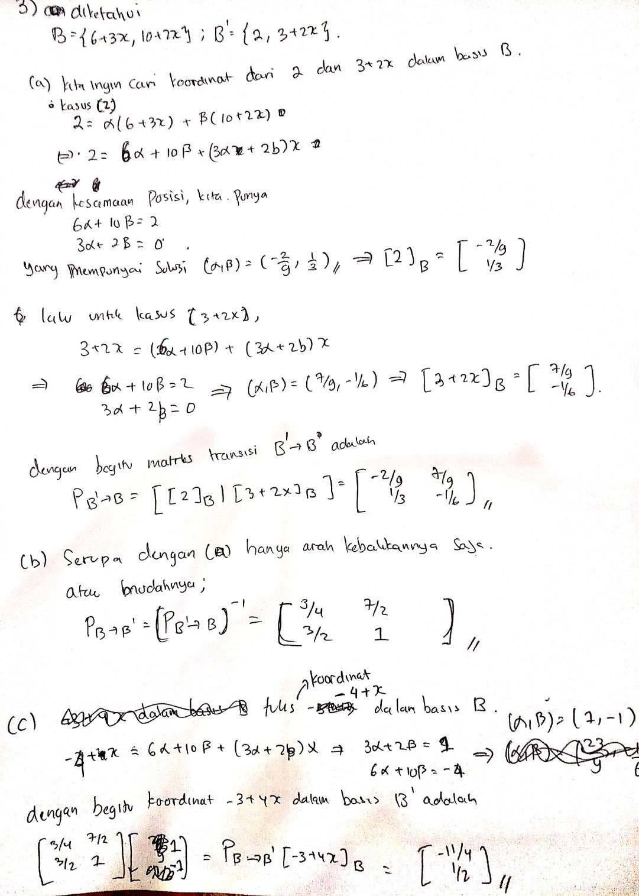
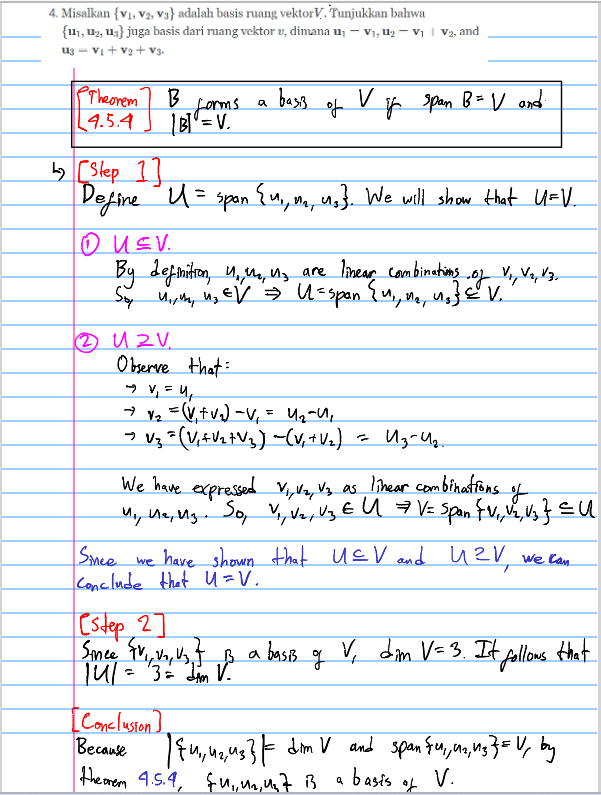
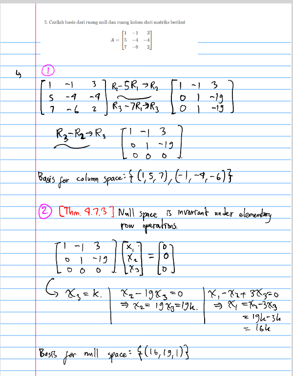

Responsi-2 (Persiapan Kuis Tertulis)
Soal
- Ruang Vektor \(P_2\) memuat semua polinomial yang mempunyai derajat lebih kecil atau sama dengan dua. Misalkan \(S=\left\{f_1(x), f_2(x), f_3(x)\right\}\) dengan \(f_1(x)=1+x+x^2, f_2(x)=x+2 x^2\), \(f_3(x)=3 x\)
- [15] Apakah \(S\) bebas linier? Tunjukkan dengan menggunakan definisi bebas linier.
- [15] Apakah \(S\) merentang \(P_2\) ? Tunjukkan dengan menggunakan definisi merentang.
- [10] Apakah \(S\) merupakan basis untuk \(\operatorname{span}(S)\) ? Jelaskan jawaban anda!
- [10] Carilah dimensi dari \(\operatorname{span}(S)\) !
- Diketahui sebuah segmen garis KM yang titik-titik ujungnya yaitu \(\mathbf{K}(5,0)\) dan \(\mathbf{M}(10\), 8). Segmen garis KM tersebut ditransformasikan secara urutan sebagai berikut:
Dirotasi sebesar \(90^0\) searah jarum jam dengan titik putarnya di titik \(0(0,0)\), lalu
Direfleksikan terhadap garis \(y=x\).
- [10] Carilah matriks transformasi rotasi-nya!
- [10] Carilah matriks transformasi refleksinya!
- [15] Carilah matriks transformasi komposisi dari kedua transformasi tersebut!
- [15] Carilah titik-titik ujung segmen garis hasil akhir setelah melakukan komposisi dua transformasi di atas berdasarkan matriks komposisinya!
Pada ruang untuk \(P_1\) diberikan basis-basis \(B=\left\{\boldsymbol{p}_1, \boldsymbol{p}_2\right\}\) dan \(B^{\prime}=\left\{\boldsymbol{q}_1, \boldsymbol{q}_2\right\}\), dengan \(\boldsymbol{p}_1=6+3x, \boldsymbol{p}_2=10+2x, \boldsymbol{q}_1=2\), dan \(\boldsymbol{q}_2=3+2 x\)
- [12] Dengan menggunakan koordinat vektor, carilah matriks transisi dari \(B^{\prime}\) ke \(B\).
- [8] Carilah matriks transisi dari \(B\) ke \(B^{\prime}\).
- [10] Dengan menggunakan matriks transisi, hitunglah \([\boldsymbol{p}]_{B^{\prime}}\) dengan \(\boldsymbol{p}=-4+x\) $$.
Misalkan \(\left\{\mathbf{v}_1, \mathbf{v}_2, \mathbf{v}_3\right\}\) adalah basis ruang vektor\(V\). Tunjukkan bahwa \(\left\{\mathbf{u}_1, \mathbf{u}_2, \mathbf{u}_3\right\}\) juga basis dari ruang vektor \(v\), dimana \(\mathbf{u}_1=\mathbf{v}_1, \mathbf{u}_2=\mathbf{v}_1+\mathbf{v}_2\), and \(\mathbf{u}_3=\mathbf{v}_1+\mathbf{v}_2+\mathbf{v}_3\).
Carilah basis dari ruang null dan ruang kolom dari matriks berikut \[ A=\left[\begin{array}{rrr} 1 & -1 & 3 \\ 5 & -4 & -4 \\ 7 & -6 & 2 \end{array}\right] \]
Jawaban




